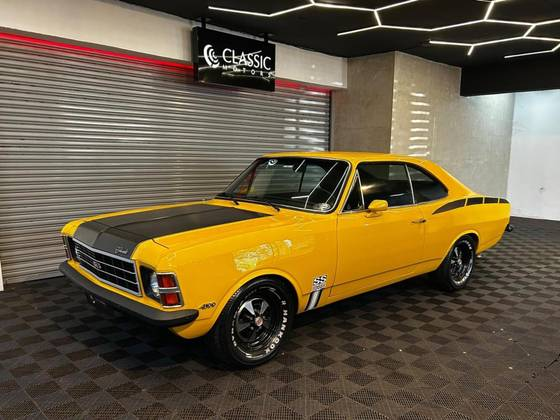
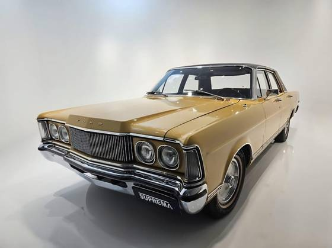
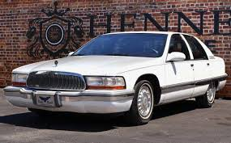
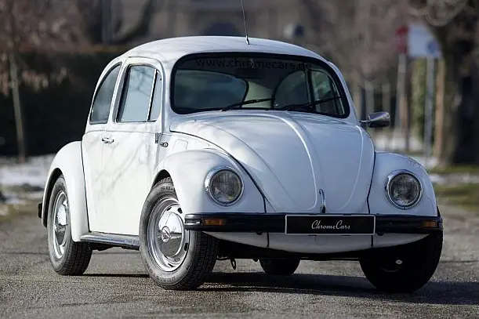
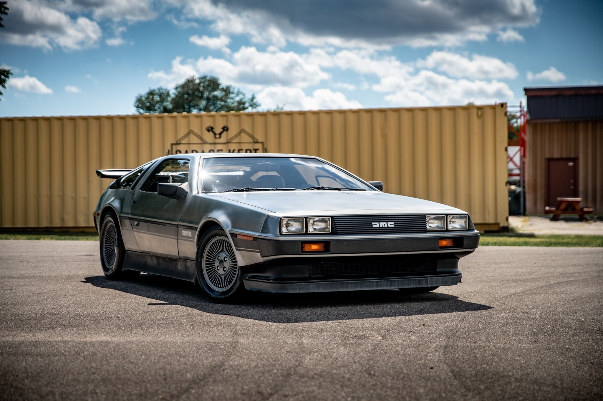

Mercado de carros antigos no Brasil é valorizado, com modelos clássicos como Fusca, Opala, Maverick e Kombi, frequentemente fabricados entre as décadas de 1960 e 1990, atingindo altos valores de colecionador. Fusca, Opala, Maverick e Kombi, frequentemente fabricados entre as décadas de 1960 e 1990, atingindo altos valores de colecionador. Modelos com placa preta indicam originalidade e alto valor de revenda, com opções baratas para iniciar uma coleção, como Chevrolet Chevette e Fiat Uno.




